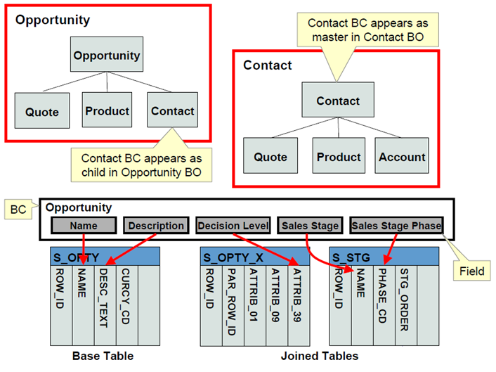

Welcome to Siebel Configuration
This module transforms you from a Siebel user into a Siebel configurator. You'll learn to modify and extend Siebel's functionality without writing code.
What You'll Learn
- Overview of Siebel Tools and Web Tools
- Understanding the workspace development model (IP 17+)
- Creating and managing data models
- Configuring business components and business objects
- Setting up application parameters and system preferences
- Creating and managing workflows
- Customizing the user interface
- Personalizing user experiences
⚠️ Important: Configuration changes affect all users. In production environments, always test changes in a development environment first and follow your organization's change management procedures.
Estimated reading time: 5 minutes
Siebel Tools vs. Web Tools
Historically, Siebel configuration required Siebel Tools - a Windows desktop application. With IP 17+, Oracle introduced Web Tools, bringing configuration to the browser.
Siebel Tools (Legacy)
Windows Desktop Application
Pros:
- Full access to all repository objects
- Advanced search and filter capabilities
- Direct database connection for complex operations
Cons:
- Windows-only (no Mac or Linux support)
- Requires local installation and setup
- No workspace support (single-user locking model)
When to use: Advanced scenarios, bulk operations, or if you're on a pre-IP17 version
Siebel Web Tools (Modern - IP 17+)
Browser-Based Configuration
Pros:
- Workspace support: Multiple developers can work simultaneously
- Browser-based: Access from any device, any OS
- Versioning: Built-in checkpointing and rollback
- Change tracking: Audit trail of all modifications
- Easier learning curve: Familiar web UI
Current limitations:
- Some advanced objects still require Siebel Tools
- Bulk operations are more limited
When to use: All routine configuration work on IP 17+ systems (which includes your IP 21.7 training environment)
üéØ For This Training: We'll focus exclusively on Web Tools since you're working on IP 21.7, which fully supports the modern workspace model.

Web Tools integrate directly with the Siebel repository through workspaces
Estimated reading time: 8 minutes
The Workspace Development Model
Workspaces are the foundation of modern Siebel development. They enable parallel development, versioning, and safe experimentation.
What is a Workspace?
A workspace is an isolated copy of the Siebel repository where you can make changes without affecting other developers or the production system.
Think of it like:
- Git branches (if you're familiar with version control)
- A personal sandbox where you can experiment
- A staging area before changes go live
Workspace Hierarchy
1. MAIN Workspace
The top-level, read-only workspace representing your production repository. No one makes changes directly in MAIN.
2. Integration Workspace
A child of MAIN, created for a major release or project. This is where changes from multiple developers are consolidated and tested together.
Example names: Release_2024Q1, MobileApp_Project
3. Developer Workspace
A child of an Integration Workspace. This is YOUR personal workspace where you perform all configuration work.
Example names: JSmith_ServiceRequest_Enhancement

Three-tier workspace structure enables parallel development
üîë Key Concept: Changes flow upward: Developer Workspace → Integration Workspace → MAIN. This ensures testing at each level before production deployment.
Estimated reading time: 10 minutes
Workspace Lifecycle Operations
Understanding the workspace lifecycle is critical for effective collaboration and change management.
Creating a Workspace
- Log into Web Tools
- Click Workspace → Create Workspace
- Select a parent (usually an Integration Workspace)
- Enter a descriptive name (include your name and purpose)
- Add a description explaining what you'll be working on
- Click Create
Opening a Workspace
Before making any changes, you must "open" your workspace:
- Click Workspace → Open Workspace
- Select your workspace from the list
- Click Open
Status bar indicator: The workspace name appears at the top of Web Tools when a workspace is open.
Locking Objects
Before editing an object, you must lock it:
- Find the object you want to modify (e.g., a Business Component)
- Right-click and select Lock
- The object is now yours – no one else can modify it in another workspace
Locked indicator: Locked objects show a padlock icon
Checkpointing
A checkpoint is like a "save point" for your workspace. It creates a snapshot of your current changes.
Why checkpoint?
- Create restore points before risky changes
- Document progress milestones
- Enable rollback if something goes wrong
How to checkpoint:
- Click Workspace → Checkpoint
- Enter a descriptive comment
- Click OK

Complete workspace lifecycle from creation to delivery
Estimated reading time: 10 minutes
Submitting and Delivering Changes
When your configuration work is complete and tested, you'll submit it for review and delivery to the next level.
Submitting for Delivery
Submit signals that your work is complete and ready for integration.
- Ensure all changes are tested
- Click Workspace → Submit for Delivery
- Enter completion notes describing what you changed and why
- Click Submit
Status change: Your workspace status changes to "Submitted" and is locked for further edits.
Delivering Changes
Deliver is performed by a release manager or administrator. It merges changes from your workspace into the parent workspace.
- Review the submitted workspace and its changes
- Resolve any conflicts with other delivered changes
- Click Workspace → Deliver
- Confirm the delivery
Result: Changes are now in the Integration Workspace and can be tested with other developers' changes.
⚠️ Important: Once delivered, a workspace cannot be reopened. If you need to make more changes, create a new workspace.
Estimated reading time: 7 minutes
Understanding Siebel's Data Model
The data model is the foundation of your Siebel application. It defines how information is structured, stored, and related.
Core Data Model Objects
1. Tables
Physical database tables that store data. Siebel table names typically start with S_
Examples:
S_ORG_EXT - Organization/Account dataS_CONTACT - Contact informationS_SRV_REQ - Service Request records
2. Columns
Fields within a table. Column naming conventions:
ROW_ID - Primary key (unique identifier)NAME - Common descriptor fieldPAR_ROW_ID - Foreign key to parent recordX_* - Custom extension columns
3. Indexes
Database indexes improve query performance. Siebel automatically creates indexes for:
- Primary keys (ROW_ID)
- Foreign keys (PAR_ROW_ID, etc.)
- Frequently searched columns

Siebel's layered data model from physical tables to business objects
Estimated reading time: 8 minutes
Configuring Business Components
Business Components (BCs) are the heart of Siebel's data layer. They map database tables to logical business entities that users interact with.
What is a Business Component?
A BC is a metadata definition that:
- Maps to one primary table (base table)
- Can join to additional tables for calculated fields
- Defines which fields are visible and editable
- Contains validation rules and calculated values
- Controls search behavior
Key BC Properties
Table
The primary database table this BC represents
Example: The "Account" BC maps to table S_ORG_EXT
Search Specification
SQL WHERE clause that filters which records are visible
Example: [Status] <> 'Inactive' hides inactive records
Sort Specification
Default sort order for query results
Example: [Name] ASC sorts alphabetically by name

How Business Components map tables to logical entities
Estimated reading time: 9 minutes
Creating and Managing Workflows
Workflow Process Manager allows you to automate business processes using a visual drag-and-drop designer.
When to Use Workflows
- Multi-step processes: Approval workflows, escalations
- Data integration: Send/receive data from external systems
- Complex business logic: Branching decisions based on multiple criteria
- Scheduled tasks: Batch operations that run automatically
Workflow Components
Process
The top-level workflow definition containing all steps and logic
Steps
Individual actions within the workflow:
- Business Service: Call a Siebel or custom service
- Decision Point: Branch based on conditions
- Sub-Process: Call another workflow
- Wait: Pause until a condition is met
Visual workflow designer with drag-and-drop steps
Estimated reading time: 10 minutes
Customizing the User Interface
Siebel's UI is highly customizable. You can add fields, rearrange layouts, and create entirely new screens.
UI Object Hierarchy
Application → Screen → View → Applet → Control
Each level builds on the previous:
- Application: Top-level container (e.g., "Call Center")
- Screen: Navigation grouping (e.g., "Service Requests")
- View: Complete page layout
- Applet: UI component showing BC data
- Control: Individual field or button
Web Tools' visual layout editor for applets
Estimated reading time: 8 minutes
Module Summary: Configuring Siebel Applications
Excellent work! You now understand how to configure Siebel using the modern workspace model.
✅ What You've Mastered
- Differences between Siebel Tools and Web Tools
- Workspace development model and lifecycle
- Creating, opening, and managing workspaces
- Locking, checkpointing, submitting, and delivering changes
- Understanding Siebel's data model architecture
- Configuring Business Components and Business Objects
- Creating workflows to automate processes
- Customizing the user interface
üìö Coming Next
In Topic 3: Managing Customer Data, you'll learn:
- Data quality and validation techniques
- Import/export processes (EIM)
- Customer segmentation strategies
- Contact and account management best practices
- Service request handling
Module completion time: ~2 hours